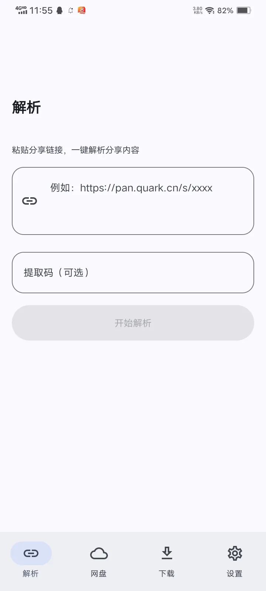
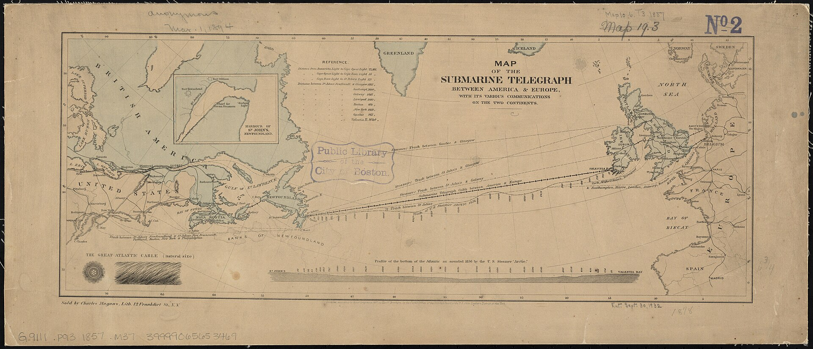
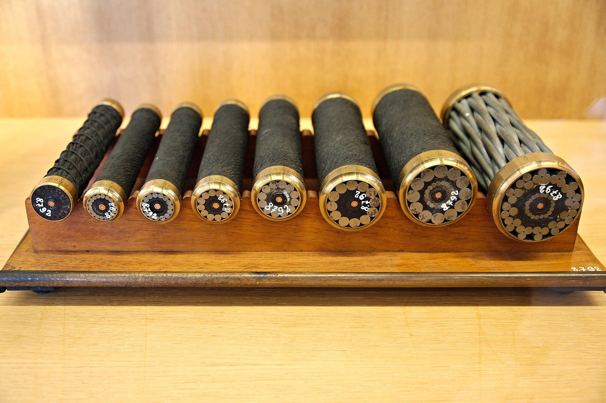
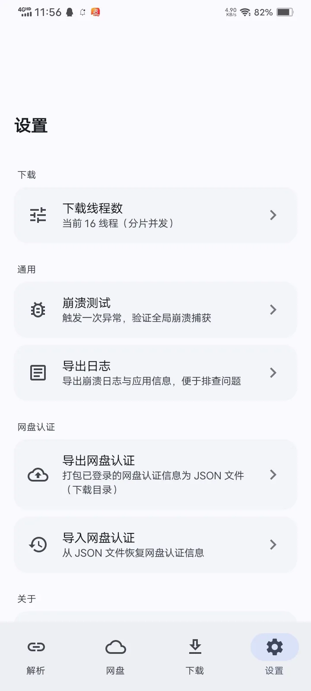

把分享链接变成你的文件
粘贴一次，认出十个网盘，分片并发下载。登录凭据加密留在这台手机上，不经过任何第三方服务器。
还没识别到分享链接。把它粘进来，这里会显示识别到的网盘、提取码与分片计划 —— 全部在这台设备上完成，不会联网。
三步拿到文件
没有账号体系、没有中转服务器：链接在手机上被解析，直链直接交给下载引擎。
粘贴链接 分享文案整段粘进来也行，应用会自己挑出链接与提取码。
选要下的文件 解析后能浏览目录、多选、按文件夹批量入队。
下载 分片并发、断点续传；锁屏也能接着下。
剪贴板识别 复制一条分享链接再回到应用，解析页会自动提示粘贴，不用手动找输入框。
多任务并行 默认同时下载三个任务，并发数可在设置里调；每个任务内部再分片并发。
右图取自正在运行的应用，不是设计稿。解析页的输入框同时接受整段分享文案与单独的提取码。
正在取直链…已完成的段用浅绿标出

认十个网盘
能登录的都能解析；未登录时，夸克、UC、光鸭、蓝奏云的分享链接也能直接下载。登录只发生在你与网盘之间 —— 应用不代收密码，也没有中转服务器。
| 网盘 | 登录方式 | 能做什么 |
|---|---|---|
| 夸克网盘 | 网页登录 | 解析、浏览目录、取直链、下载 |
| UC 网盘 | 网页登录 | 解析、浏览目录、取直链、下载 |
| 迅雷网盘 | 账号密码 / 短信 | 解析、取直链；取链后清理临时转存 |
| 百度网盘 | 网页登录 | 解析、取直链；不推荐，可能触发风控 |
| 123 云盘 | 网页登录 | 解析、下载 |
| 139 网盘（和彩云） | 网页登录 | 解析、下载 |
| 115 网盘 | 应用内登录页 | 解析、下载 |
| 光鸭云盘 | 应用内登录页 | 解析、下载 |
| 蓝奏云 | 网页登录 | 解析、下载 |
| 蓝奏云优享版 | 账号密码 | 解析、下载 |
它把文件切成段，同时下
服务器支持 Range 时，文件被切成不等长的分片并发拉取；慢的那片不会拖住整体。这件事 1857 年就有人做过 —— 大西洋海底电报线也是一条线切成几段接力。

分片并发 按 HTTP Range 并行拉取；服务器不支持时自动回退单流。
动态分块 + 工作窃取 慢连接不拖垮整体，消除最后一片单线程收尾的长尾。
断点续传 分片状态落盘，暂停后按真实进度接着下。
并发会自己收敛 并发升高而总吞吐不再提升时自动退回较低档位，不会出现「线程数拉满反而更慢」。

下载引擎是 TurboDL —— 一个纯 Kotlin/JVM 的多线程下载引擎，当前内置版本 0.3.0.0；它也可以被别的应用直接复用。
你的 Cookie 不离开这台手机
网盘登录凭据用系统密钥库加密后存在应用私有目录；解析与取直链都在本机完成，没有任何中转服务器经手你的账号。
系统密钥库加密 改锁屏密码或换设备会让密钥失效，那时应用会明确告诉你需要重新登录。
不出网 凭证只发给对应网盘的官方域名；应用不收集、不上报。
可导出备份 换手机时用自设密码加密导出，不依赖云端。
加密密钥由系统密钥库保管，导出备份需自设密码

网盘接口变了，不用等应用更新
解析逻辑可以做进插件：装一个、启用，立即生效；网盘改接口时更新插件即可，不用等应用发版。
跑在沙箱里 插件是 JavaScript，只能通过宿主开放的接口访问网络与存储，越界调用会被拒绝并留下日志。
装上就生效 沙箱可以整体重建，所以插件启用、更新都不需要重启应用。
校验后才安装 每个版本都验 SHA-256 与签名；密钥被吊销的发布者即使签名有效也会被拒绝。
坏了能回退 更新失败自动回退上一可用版本；内置实现始终保留作兜底。
插件装好后立即生效；更新不需要重启应用
常见疑问
夸克、UC、光鸭、蓝奏云的分享链接不登录也能解析与下载；其余网盘需要先登录。登录只在你与网盘之间发生，应用不经手你的密码。
不会。解析在你的手机上直接请求网盘官方接口，应用自身没有中转服务器，也没有任何埋点上报。首屏那个演示控件同样不联网。
夸克、UC、迅雷、百度、123、139、115、光鸭、蓝奏云、蓝奏云优享版，共十个。百度网盘可能触发风控，不建议使用。
把解析逻辑做成可更新的部件：网盘改接口时更新插件即可，不用等应用发版。插件是跑在应用沙箱里的 JavaScript，只能通过宿主开放的接口访问网络与存储，安装前会验签名。
浏览器单连接下载；云取把文件切成不等长的分片并发拉取，并能在暂停后按分片续传。并发会自己收敛到这条链路的合适水平，不会因为线程数调太高反而变慢。